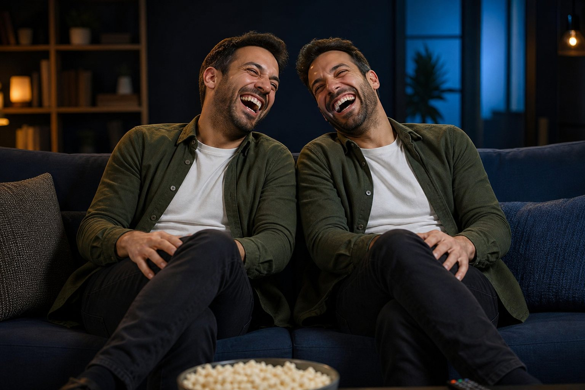
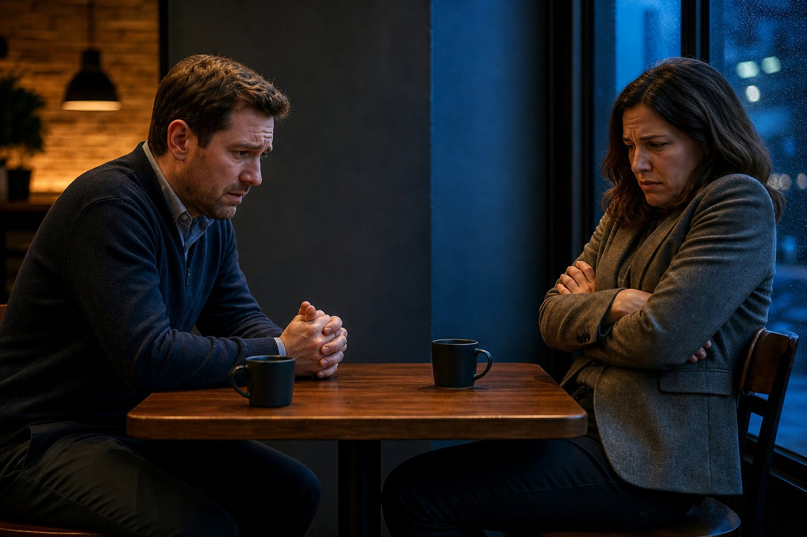
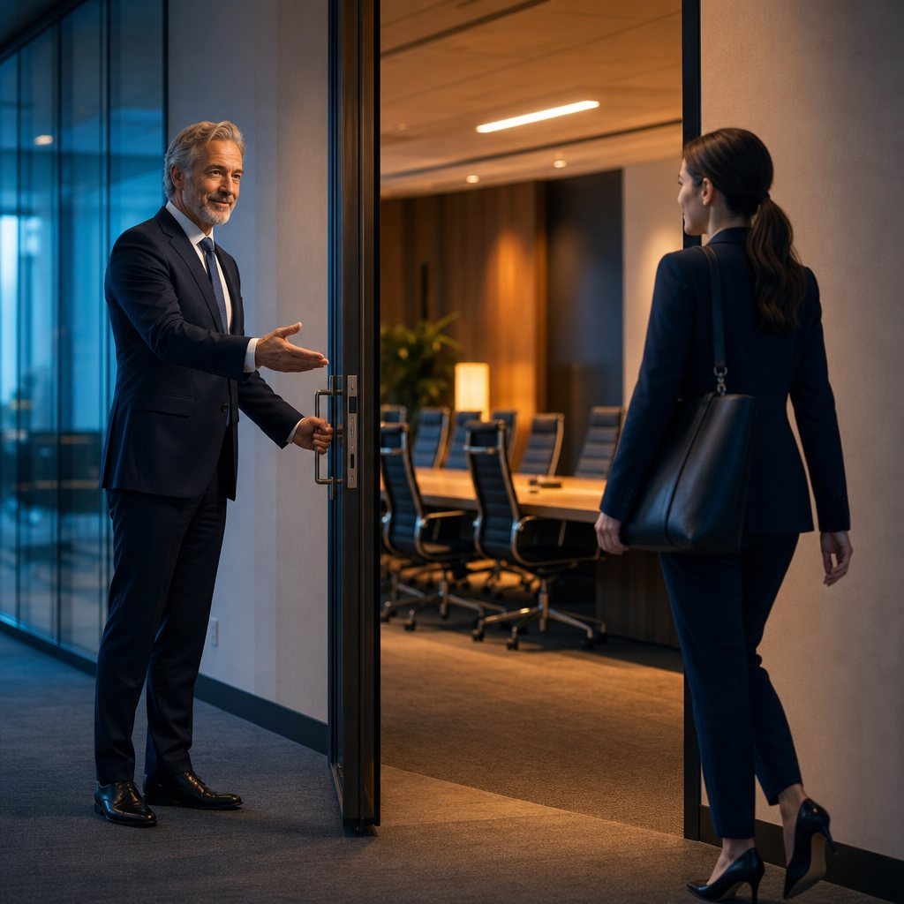

How People Read You
What other people decide about you before you finish your first sentence, why they decide it, and what you can do about it.
How charisma works: the two things to remember

If feelings are contagious, the feeling you walk in with matters more than anything you say.

Walk in needing something, and they catch pressure.Today is about where that feeling comes from, and how to change it.
Three questions
- What do people decide about you in the first few seconds?
- Where does that come from, and why can't you hide it?
- What do you do instead?Four shifts, and two guardrails.
Same résumé. Two entrances.
Who gets the job? Decide before anyone speaks.
People saw a stranger's face for a tenth of a second and judged it. Given all the time they wanted, they rarely changed their verdict. They only got surer.
Strangers watched silent clips of teachers that were 10 seconds or shorter. Their ratings matched what students said after a full semester.
Nobody was judging what the teachers said. They were judging how the teachers showed up.
The same thing happens to you in every room you walk into.
What they are reading
One question sits under every first impression: does this person need something from me?
Need
Ease
Researchers call this tunneling. The thing you lack takes up the room you would use to listen, think and stay loose.
That is why you can't hide need by trying harder. Trying harder is the tunnel.
Need feeds itself
need it more
Every scene in this deck is this loop, or the way out of it.
Start from that state, and the loop never starts.
What having options does to people
People with options
People without them
Four shifts move you from the right column to the left. Each one works for a specific reason.
Outcome independence
You are fine no matter how this conversation goes.
Same résumé. Two entrances.
Remember these two? This time with the sound on.
Pressure makes people protect their freedom
When people feel pushed toward a choice, they push back to keep the choice theirs. Psychologists call it reactance.
The follow-up text
You asked a friend to hang out. No reply yet.
Independence is not indifference
Acting like you don't care is a performance, and a performance still needs an audience.
Abundance
Build it. Don't pose it.
Whoever needs the other more has less power
Their power over you equals how much you depend on them. Options lower your dependence, and that can't be faked, which is why you build them.
Left out of the plan
Your friends are doing something Friday. Nobody mentioned it to you.
When you're explaining, you're losing
Explain when asked. Never defend unasked.
People average your reasons. They don't add them up.
We assume more reasons make a stronger case. Listeners blend them, so every weak reason drags the strong one down. Hedges like "I just" and "sort of" also make a speaker sound less credible.
“Why did you do it this way?”
Your boss asks about your work in front of the team.
Amuse yourself
I am not trying to make you laugh. I make myself laugh, and you are here with me.
In the charisma lesson, interesting and funny people were two of the three kinds we want to be around. This is where both come from.
Being interesting starts with being interested
Your interest is catchy. When you tell a story or a joke, put your attention on the story, not on the audience.
Watching the audience
Inside the story
Tell it for how interesting or funny it is to you. That is what rubs off on them.
This doesn't mean ignoring them. Keep reading their faces, even the small flickers, and if they've checked out, wrap it up. You're watching to steer the story, not to be approved of.
People catch your state
You know this one as emotional mirroring. We automatically copy the expressions, posture and tone of whoever we're with, and start to feel what they feel. A joke that lands also reads as confidence and competence.
Walking up to the group
A party. Three people you don't know are mid-conversation.
The interview in paint-splattered clothes
- He says why he looks like this, once, and doesn't grovel.
- The joke works because he is enjoying it too.
- By the end, look at who is leaning in.

Presence decides which doors open. Talent decides what happens inside.
First: can I see them in this role?
Second: can they do it?
On executive presence:
“No man or woman attains power or exerts influence without it.”
Be the person who holds the role, not the person who wishes they did
Wishing for it
Holding it
It is the same question as before: how would someone who already has this behave?
Every new role feels like a costume at first. New behavior usually feels fake before it feels like yours, and that feeling is a sign you're growing.
You aren't pretending to be someone else. You're getting comfortable in the role and the room you're in.
First, people ask: do you mean well?
Ease without interest in the other person reads as arrogance. People who ask follow-up questions are liked more.
Remember: the biggest compliment you can pay someone is your attention.
Then they ask: can you deliver?
Confidence gets you the room. Being found out loses it.
Confident people get read as competent, even when they aren't. That lasts until the work is due.
So be good at the thing.
Total command, no warmth
- She never raises her voice or speeds up.
- She explains nothing she wasn't asked, and the room is hers.
- Nobody relaxes. Would you want to work for her?
A question hands the decision back
This is reactance again. Chasing a no tries to take the decision away from the person who made it. A question leaves it with them.
Getting a no
You pitched for the work. The answer comes back.
In one study, managers were coached on twelve habits that charismatic speakers share. Three months later, their coworkers rated them higher as leaders.
Nine in what they said
Three in how they said it
Four shifts, four tools for your toolbelt
- Outcome independencePause for two seconds before you answer.Notice how hard it is, and that nothing bad happens.
- AbundanceMake the plan and invite people to it.You go whether or not they come.
- When you're explaining, you're losingSay what you want once, then stop.No reasons attached unless someone asks for them.
- Amuse yourselfStay inside your story.Tell it for what's interesting or funny to you. Read the room, but don't perform for it.
And two guardrails: stay interested in them, and be good at the thing.
People like you for the way you make them feel, and they can only catch from you what you already have.
So before you walk into the room, the interview or the conversation, get to where you'd be okay either way. Then go in.